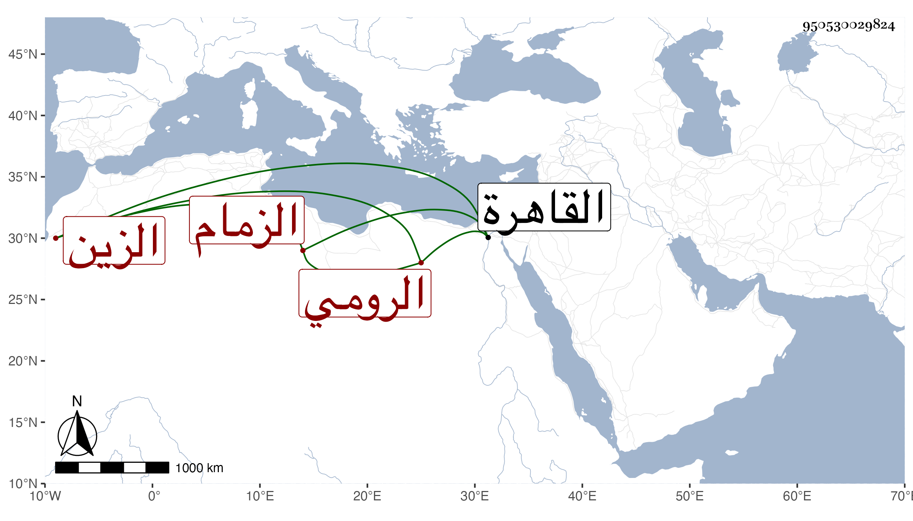

0902Sakhawi.DawLamic.ITO20230111-ara1.EIS1600.950530029824
Biography ID: 950530029824
697
مقبل الزين الرومي الزمام بالدور السلطانية . كان رأسا في الخدام وعنده حشمة ورياسة وتولى الزمامية في الدولة الناصرية فرج وعظم ونالته السعادة وعمر عدة أملاك ودور حبسها على مدرسته التي أنشأها بخط البندقانيين بالقاهرة للجمعة والجماعات بل فيها وظائف وخزانة كتب وغير ذلك ولم يزل على ذلك حتى مات في أول ذي الحجة سنة عشر وخلف مالا كثيرا وذكره شيخنا في إنبائه باختصار .
